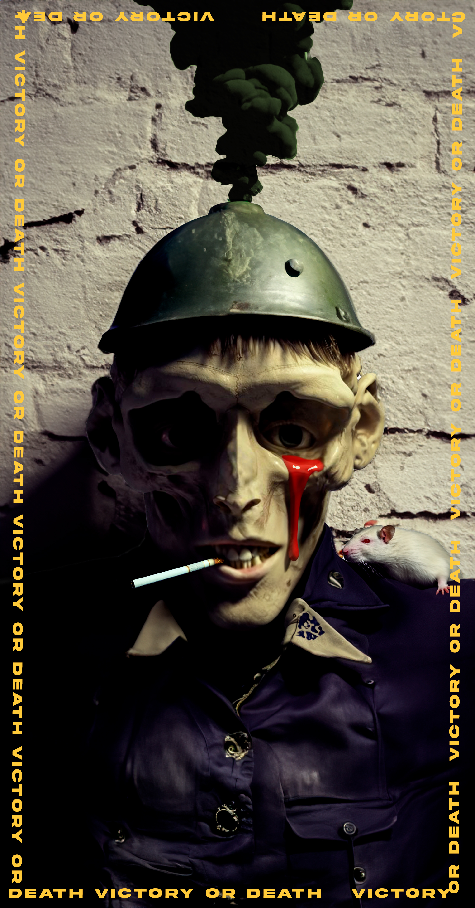

Artista:Felipe Botet
Categoria: Artista Cinematograficos
Arte: Digital

En el mundo del cine y el arte digital emerge la figura destacada de Felipe Botet. Enmarcado en la categoría de Artista Cinematográfico, su creatividad se manifiesta a través del arte digital. Con una habilidad innata para plasmar emociones en lo virtual, Felipe Botet cautiva con cada obra. Su enfoque único combina la destreza técnica con una profunda comprensión de la narrativa visual. Cada pieza es una ventana hacia un universo de sensaciones, donde la magia del cine y la expresión digital convergen en armonía.
Artista:Felipe Botet
Categoria: Artista Cinematograficos
Arte: Caricatura Digital

Dentro del vibrante mundo de la cinematografía emerge con fuerza Felipe Botet, un consumado artista que ha encontrado su expresión en la creación de Caricaturas Digitales. Su nombre resuena en la categoría de Artistas Cinematográficos, pero es en el Arte de Caricatura Digital donde despliega todo su genio. A través de trazos digitales magistrales, Felipe Botet da vida a personajes que saltan de la pantalla y se instalan en la memoria visual. Cada obra es un testimonio de su dominio técnico y su capacidad para infundir humor y vitalidad en sus creaciones. En su enfoque, la cinematografía se fusiona con la destreza de la caricatura, transportando a los espectadores a un reino de entretenimiento y creatividad sin límites.
Artista:Felipe Botet
Categoria: Artista Cinematograficos
Arte: Publicidad Digital
En el apasionante ámbito de los artistas cinematográficos, surge con prominencia Felipe Botet, quien destaca por su enfoque innovador en el Arte de la Publicidad Digital. Bajo la categoría de Artista Cinematográfico, Botet trasciende los límites tradicionales del cine al incursionar en la esfera de la Publicidad Digital. Con maestría, fusiona elementos visuales y narrativos para crear campañas impactantes que traspasan la pantalla y conectan con audiencias de todo el mundo. Cada una de sus obras es una ventana a mundos imaginarios y a productos reales, presentados con un matiz cinematográfico único. La visión de Felipe Botet redefine la manera en que percibimos la publicidad, convirtiéndola en una experiencia cautivadora que fusiona el arte del cine y las estrategias digitales.